01Contexte et objectifs
La Maison des Ligues fait appel à NetworkSI, une société de services informatiques, pour mettre en place une infrastructure réseau adaptée. Avec l'augmentation des recrutements, l'administration « poste par poste » devient trop lourde : l'objectif est une gestion centralisée des utilisateurs et des ressources avec Active Directory.
- Mettre en place un contrôleur de domaine sous Windows Server 2022.
- Gérer les utilisateurs et les ressources dans un domaine nommé MDL.LOCAL.
- Attribuer et sécuriser les droits d'accès aux répertoires personnels et partagés.
- Automatiser des tâches d'administration : création des utilisateurs, déploiement de logiciels.
- Configurer les postes clients sous Windows 10 et Windows 11.
- Restreindre les actions des utilisateurs par des stratégies de groupe (GPO).
- Tester, valider et rédiger un document technique.
02Organisation
Le projet a été découpé en onze activités, planifiées sur Trello et réparties au sein du binôme : planification, installation, mise en place des droits et des GPO, puis tests et validation.
Les utilisateurs sont recensés par service : 3 à l'accueil, 20 à la comptabilité, 20 à la communication et 7 à la direction. Leur identifiant suit une règle unique : les sept premières lettres du nom suivies de la première lettre du prénom, sans caractères spéciaux (par exemple forestm pour Forest Maxime).
Dans Active Directory, chaque service a son unité d'organisation et son groupe. Côté ressources :
- chaque utilisateur a un dossier personnel sur lequel il a tous les droits ;
- chaque service a un dossier commun, accessible en lecture à ses seuls membres ;
- les comptes invités n'ont accès à aucune ressource réseau et n'ont pas de dossier personnel.
03Contrôleur de domaine
Dans le gestionnaire de serveur, nous ajoutons le rôle des services de domaine Active Directory (AD DS).

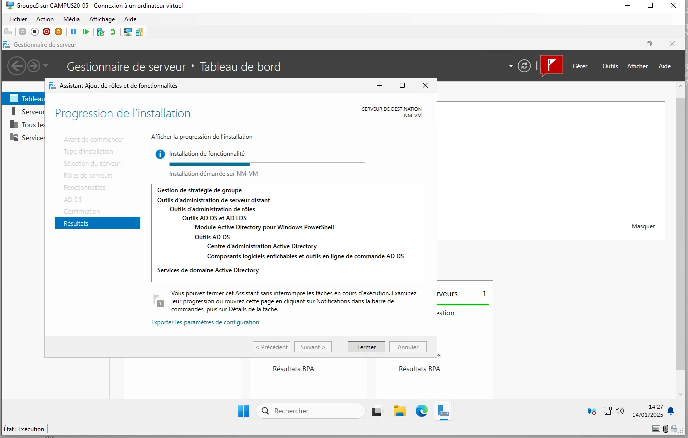
Le rôle DNS est ajouté pour que le serveur devienne contrôleur de domaine.

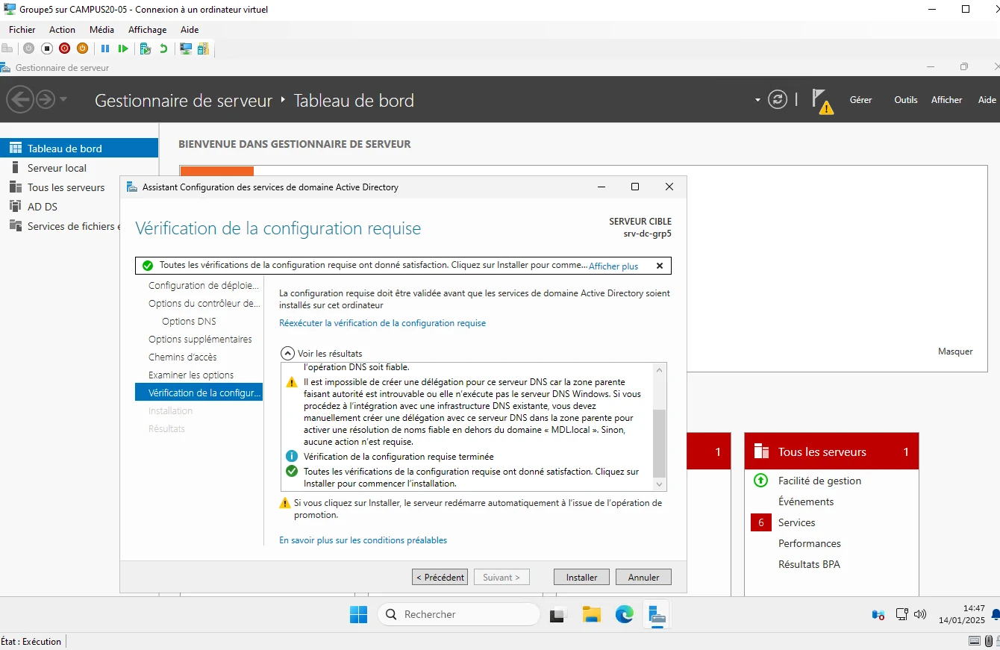
Le domaine est nommé MDL.local ; ce nom sera rappelé sur les postes clients.

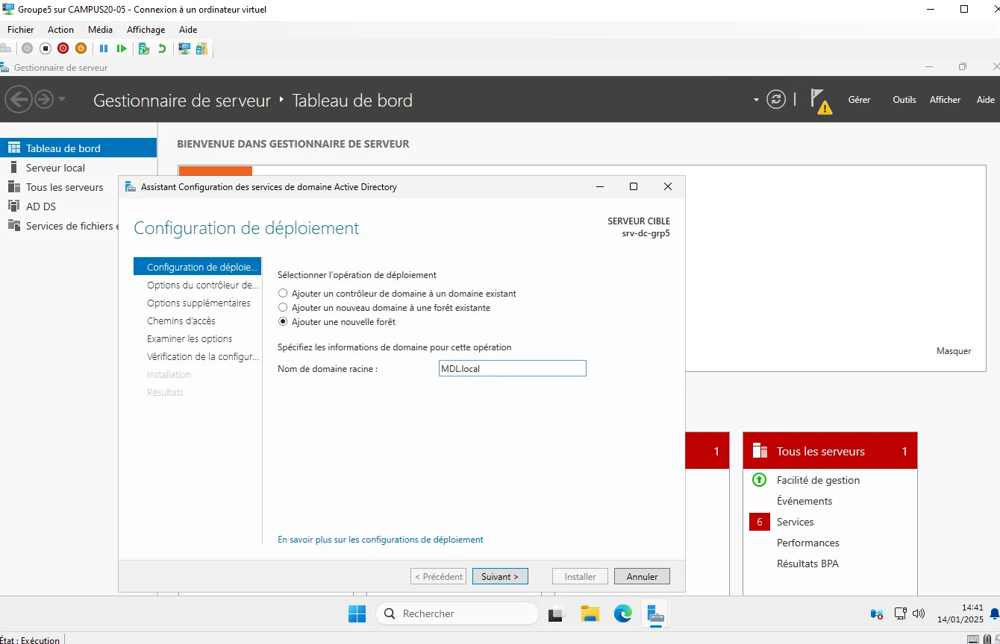
Le contrôleur de domaine reçoit enfin une adresse IP fixe.

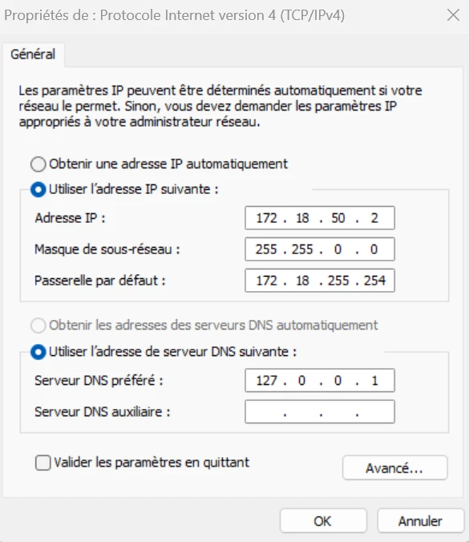
04Administration à distance
Nous installons le rôle des services Bureau à distance, puis nous activons le Bureau à distance dans les paramètres système du serveur.

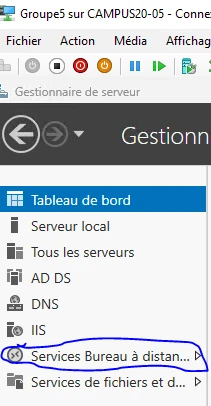

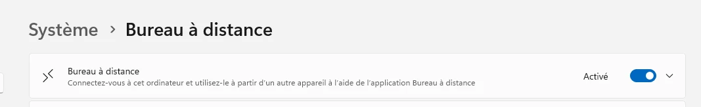
Depuis un autre poste, l'application Connexion Bureau à distance permet alors d'ouvrir une session sur le serveur avec son adresse IP et les identifiants d'un utilisateur.
05Dossiers partagés et permissions
Sur le disque du serveur, un dossier partagé contient un dossier par service de l'entreprise.

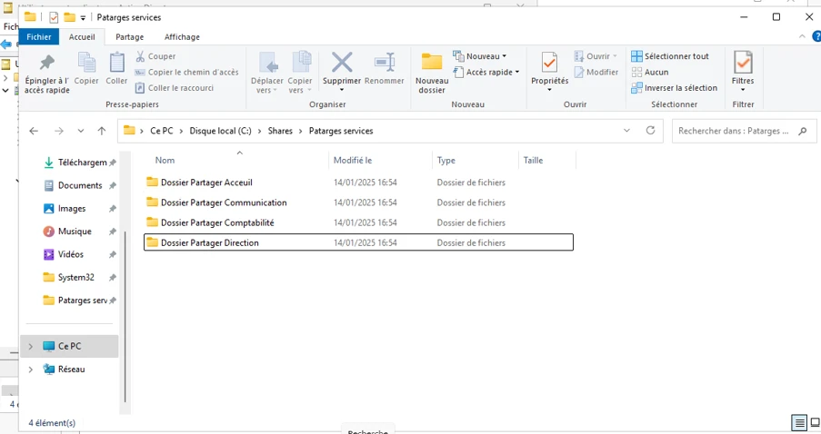
Pour chaque dossier, nous ajoutons dans l'onglet Partage le groupe qui y aura accès, avec ses droits.

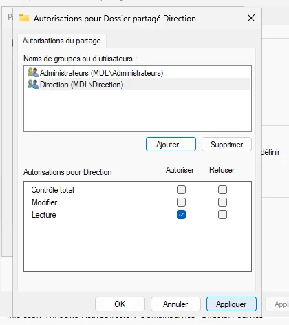
Les droits NTFS sont ensuite réglés sur chaque dossier.

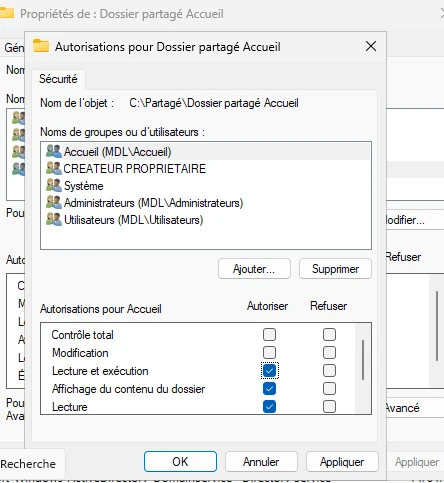
Enfin, le dossier racine est partagé en lecture aux utilisateurs authentifiés : chacun y voit uniquement le contenu auquel il a droit.

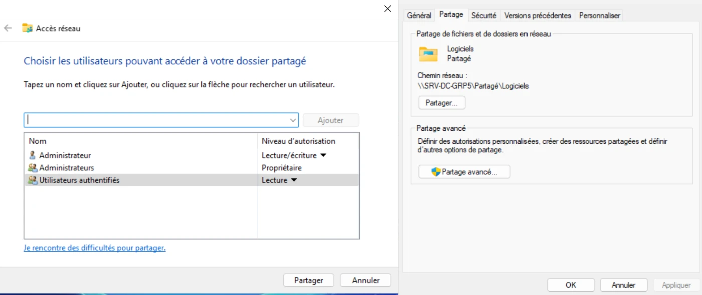
06Stratégies de groupe
Dans la console Gestion de stratégie de groupe, trois GPO sont liées à l'ensemble des utilisateurs.

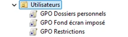
La GPO « Dossiers personnels » fait apparaître, à l'ouverture de session, un lecteur réseau au nom de l'utilisateur. Le lecteur P: pointe vers \\172.18.50.2\Partagé\Dossiers Personnels\%username% : la variable crée un dossier au nom de chaque utilisateur sur le serveur.

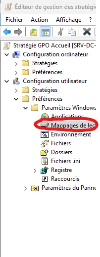
La GPO « Fond d'écran imposé » applique une image déposée dans un dossier partagé en lecture.

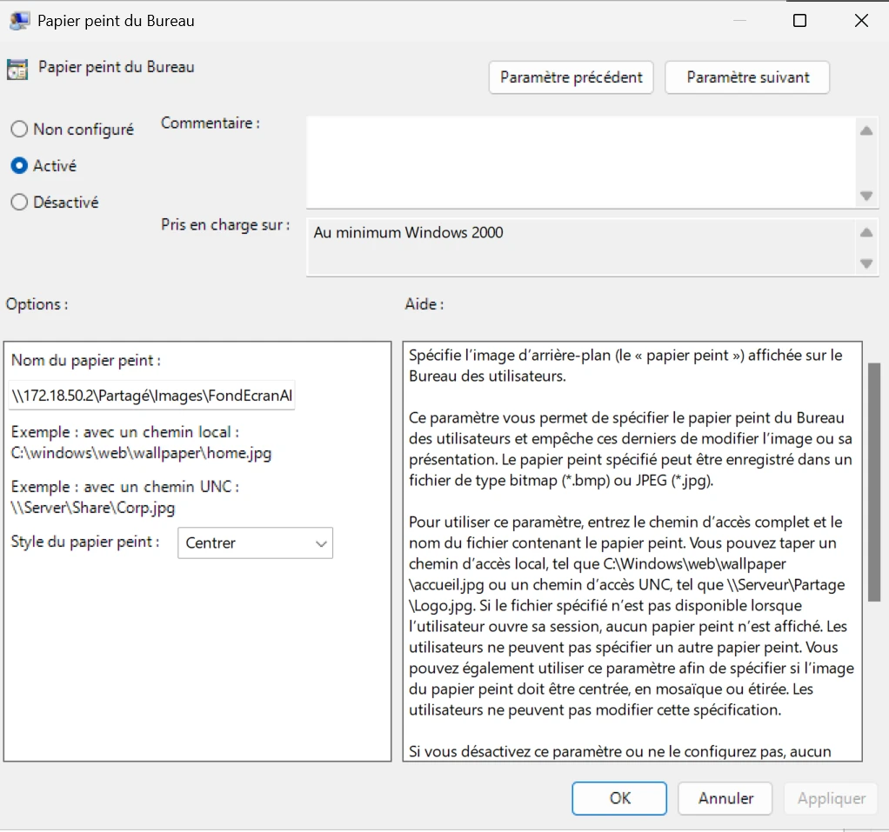
La GPO « Restrictions » masque des éléments du panneau de configuration.

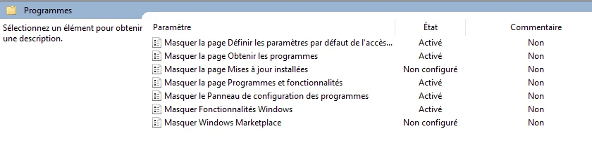
Une GPO par service connecte le dossier commun du service sur le lecteur Q:, sur le même principe que les dossiers personnels.

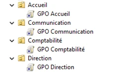
Une dernière GPO déploie Mozilla Firefox et VLC sur les postes. Les installateurs MSI sont placés dans un dossier partagé ; les postes les installent automatiquement au démarrage.

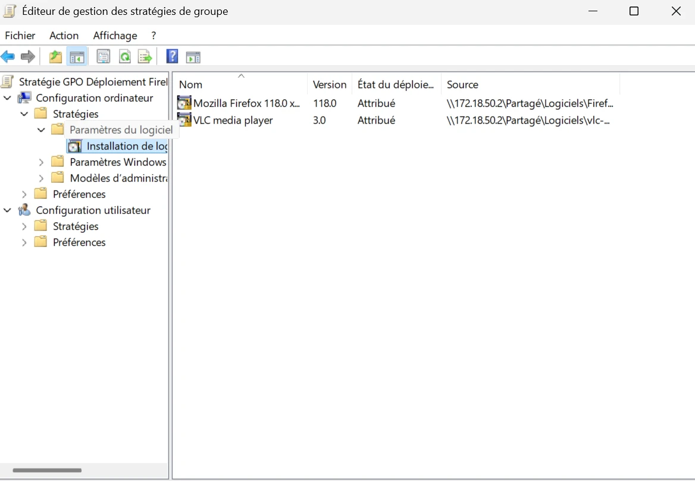
Au total, huit GPO répondent aux besoins.

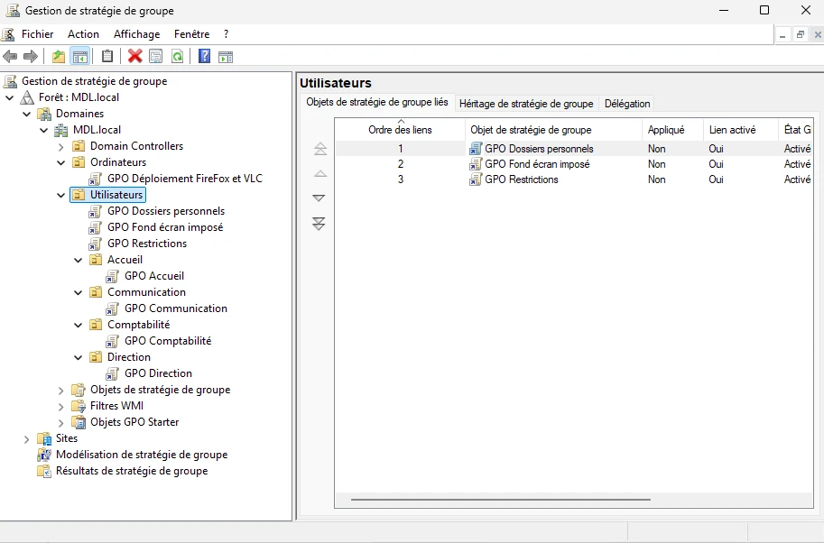
07Création des utilisateurs par script
Pour éviter de créer les comptes un par un, un script PowerShell lit un fichier CSV et crée chaque utilisateur avec New-ADUser.

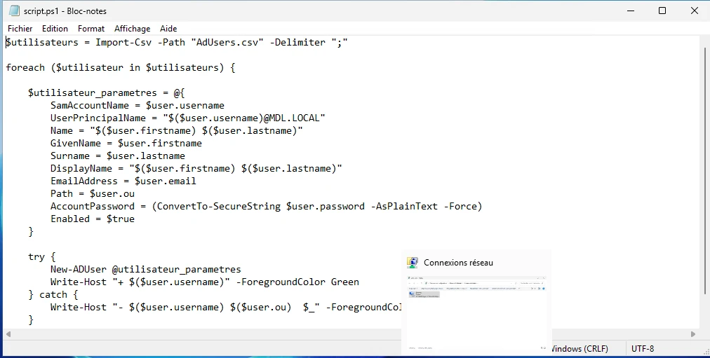
Le fichier AdUsers.csv contient, pour chaque utilisateur, les informations nécessaires : nom, prénom, identifiant, groupe et unité d'organisation.

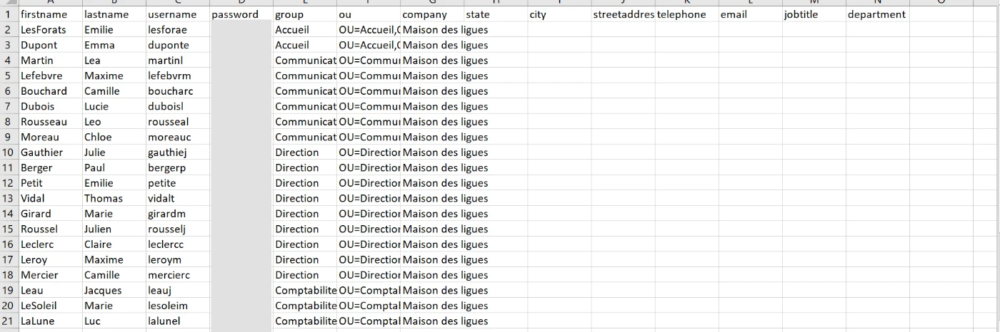
08Comptes invités
Windows fournit un compte Invité, désactivé par défaut. Nous l'avons activé et lui avons attribué un mot de passe, ce qui donne un accès invité soumis aux restrictions demandées.

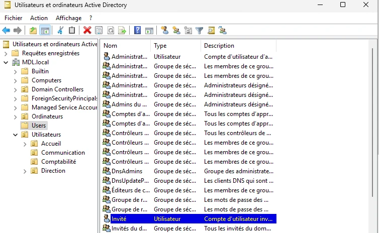
09Intégration des postes clients
Sur chaque poste client, nous configurons une adresse IP du réseau du domaine, avec le contrôleur de domaine comme serveur DNS.

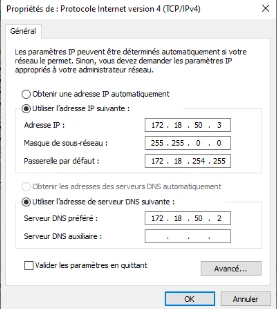
Dans les propriétés système, le poste est ensuite joint au domaine MDL.local.

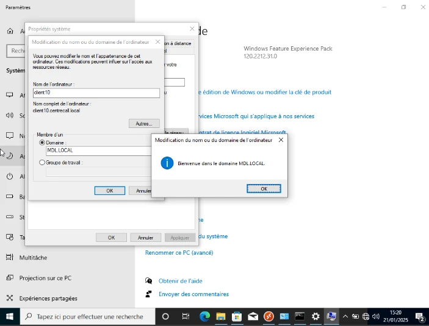
10Tests
Les tests sont réalisés sur un poste client. Le fond d'écran est bien imposé et les logiciels sont installés.

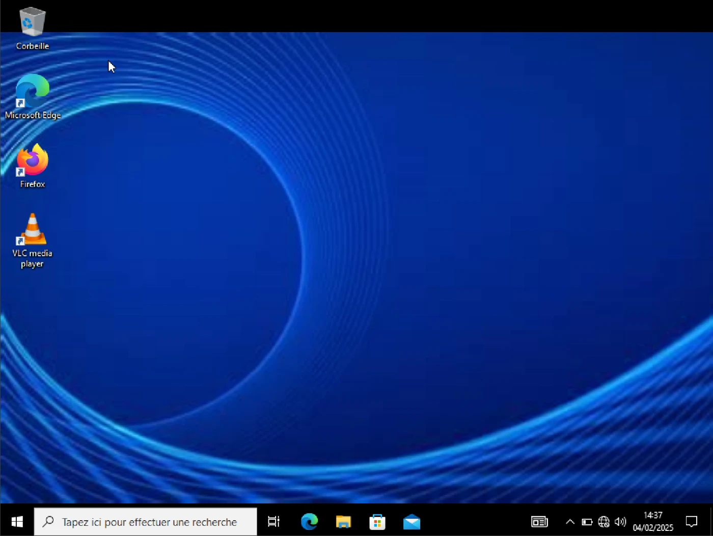
L'utilisateur accède aux ressources prévues : le dossier commun de son service et son dossier personnel.

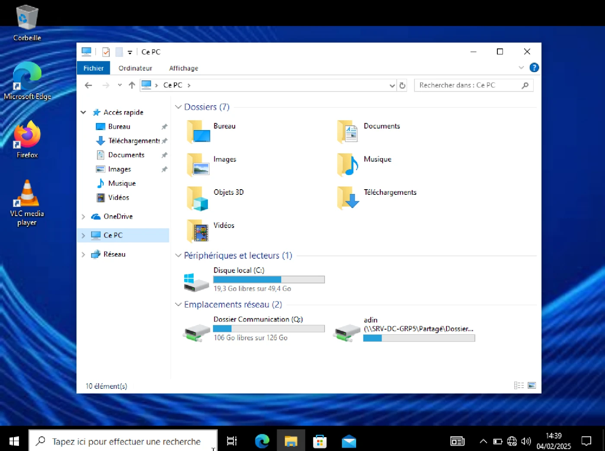
Les restrictions appliquées ont également été testées et fonctionnent.
11Bilan
Nous avons répondu à la demande de la Maison des Ligues : un contrôleur de domaine administrable à distance, des utilisateurs qui accèdent à leurs ressources et uniquement à celles-ci, et les restrictions nécessaires pour chaque profil. Le script de création des utilisateurs pourra être réutilisé pour les prochains recrutements. Les postes clients ont été intégrés au domaine, et les tests montrent que l'ensemble répond à la demande.